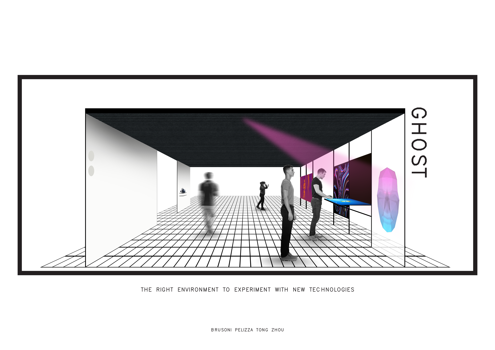
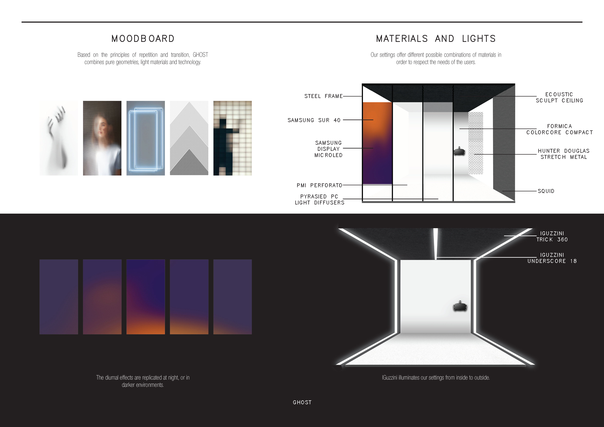
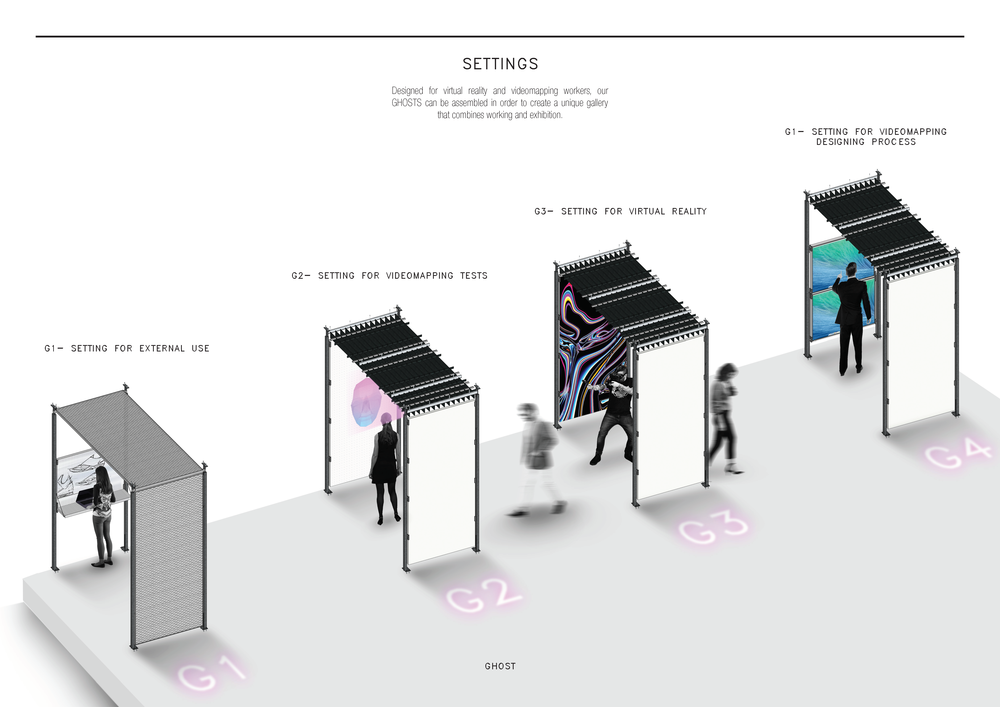
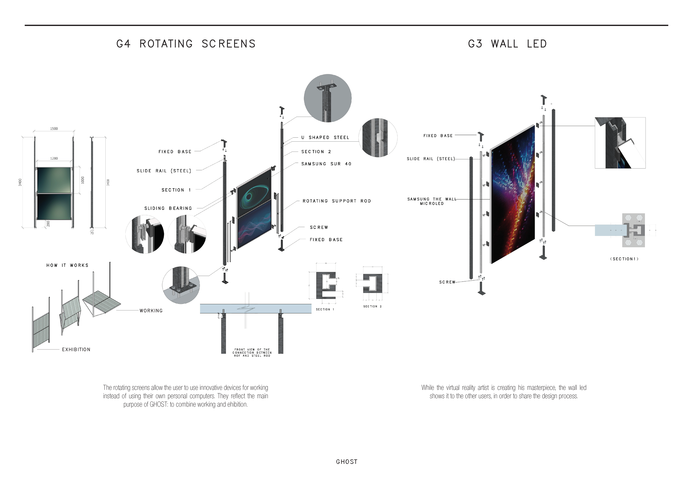

GHOST
Urban Design / Urban Regeneration
Set on Scalo Farini in Milan—an abandoned rail yard dominated by asphalt, gravel, and rusty tracks—this project proposes an urban transformation through programmatic redistribution. A central building becomes the anchor, while surrounding squares are assigned distinct functions to reintroduce public life and urban greenery.
RESEARCH QUESTION
How can program distribution and spatial typologies reactivate an abandoned rail yard into a public urban sequence?
KEY TAKEAWAY
Public life can be designed through sequences: anchor + typologies + program logic.



